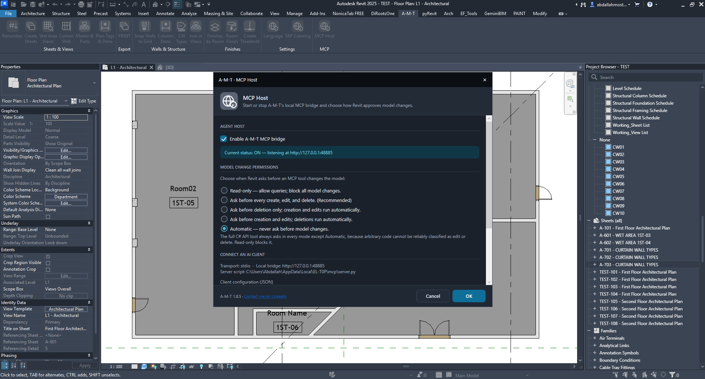
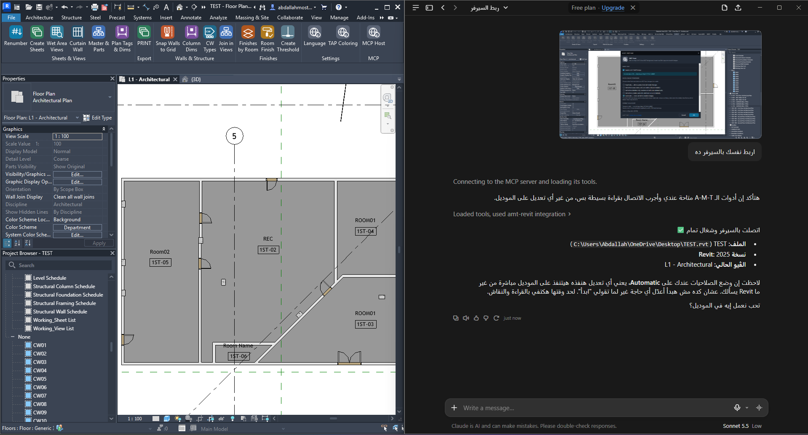

MCP Host
Connect an AI client to A-M-T's local MCP bridge and control how Revit model changes are approved.
MCP IntegrationLocal bridgeModel-change permissionsHow the command works
MCP Host starts or stops A-M-T's local MCP bridge. Once the bridge is running, a compatible AI client can connect to the Revit session and load the available A-M-T tools. You can choose the permission policy Revit uses before model changes are made.
- Enable the A-M-T MCP bridge.
- Choose how creation, editing, and deletion actions are approved.
- Use the displayed connection details and client configuration to connect an AI client.
- Confirm that the client connects and loads the A-M-T tools before requesting work.
Start the local MCP bridge

01 · Enable the bridge
Enable A-M-T MCP bridge starts or stops the local bridge. When enabled, the status line confirms that it is ON and listening at the local address shown in the dialog.
The example shows the bridge listening at http://127.0.0.1:48885. This is a local loopback address on the computer running Revit, not a public website.
When the bridge is disabled, the client cannot use this local connection. After changing the setting, confirm the status line reflects the state you intend.
Choose model-change permissions
The Model Change Permissions section controls when Revit asks before an MCP tool changes the model.
- Read-only — allows queries and blocks all model changes.
- Ask before every create, edit, and delete — requests approval for each of these actions. This is marked Recommended in the dialog.
- Ask before deletion only — creation and edits run automatically; deletion requires approval.
- Ask before creation and edits — deletions run automatically; creation and edits require approval.
- Automatic — never asks before model changes.
Connect an AI client

02 · Verify the client connection
In the Connect an AI Client section, the dialog provides the transport type, local bridge address, server script location, and a Client configuration (JSON) area.
Use the configuration supplied by your MCP Host dialog in the AI client you intend to connect. The exact setup steps depend on that client, so follow its MCP configuration workflow rather than copying a configuration from another machine.
The example on the right shows the client reporting that it connected successfully and loaded the tools from amt-revit integration. It also displays the active Revit file, Revit version, and current view.
Understand the permission choice in practice
The connected-client example shows Automatic permissions selected. The client explains that this allows model changes to be executed directly without approval prompts. Use this mode only when you intentionally want that behavior.
- For controlled work, the dialog's recommended option asks before every create, edit, and delete.
- For query-only assistance, choose Read-only to block model changes.
- Before asking the AI client to work, verify the correct Revit project and active view are open.
- Review the requested action and the resulting model in Revit.
Watch MCP Host in Action
See the local bridge connection and AI-client interaction demonstrated alongside Revit.
Before connecting
- Confirm the A-M-T MCP bridge is enabled and its status is ON.
- Choose a permission mode that matches the level of model access you intend to grant.
- Use the client configuration shown by your own MCP Host dialog.
- Confirm that the AI client reports a successful connection and loaded tools.
- Keep the intended Revit project open and inspect model changes after execution.